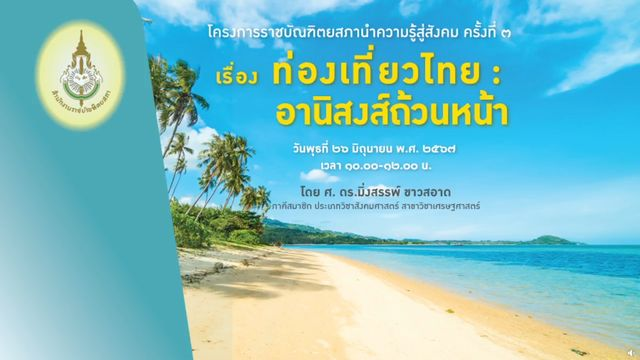
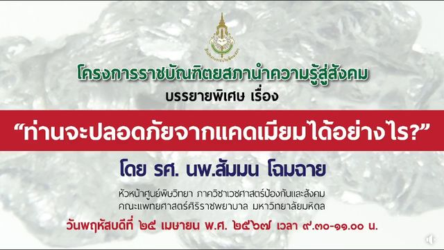

ผลงานทางวิชาการ
โครงการนำความรู้สู่สังคม
โครงการราชบัณฑิตยสภานำความรู้สู่สังคม ผ่านโรงเรียน ชุมชน และสื่อมวลชน
ราชบัณฑิตนำความรู้จากงานวิชาการออกไปสู่ผู้คนที่นำไปใช้ได้จริง ผ่านโรงเรียน ชุมชน และสื่อมวลชน
- โรงเรียน บรรยายและอบรมสำหรับนักเรียนและครู
- ชุมชน ราชบัณฑิตสัญจรไปยังภูมิภาคต่าง ๆ
- สื่อมวลชน บทความ รายการ และสื่อเผยแพร่เพื่อประชาชน
กิจกรรมของโครงการ 4 รายการ
These reports are published in Thai on the academy websites.
- ราชบัณฑิตยสภา การป้องกันอาชญากรรมออนไลน์ การบรรยายให้ความรู้ในโครงการราชบัณฑิตยสภานำความรู้สู่สังคมครั้งที่ ๔ เรื่อง การป้องกันอาชญากรรมออนไลน์ ปัจจุบันการเกิดเหตุอาชญากรรมออนไลน์ เฉพาะที่ได้รับแจ้งผ่านการรับแจ้งความออนไลน์มีเกิดขึ้นเป็นจำนวนมาก เฉลี่ยอย่างน้อยวันละ ๑,๐๐๐ คดี รูปแบบและวิวัฒนาการของกา อ่านต่อ
-

ราชบัณฑิตยสภา ท่องเที่ยวไทย : อานิสงส์ถ้วนหน้า การบรรยายให้ความรู้ในโครงการราชบัณฑิตยสภานำความรู้สู่สังคมครั้งที่ ๓ เรื่อง ท่องเที่ยวไทย : อานิสงส์ถ้วนหน้า ขอเชิญร่วมฟังการบรรยายให้ความรู้ในโครงการราชบัณฑิตยสภานำความรู้สู่สังคมครั้งที่ ๓ เรื่อง ท่องเที่ยวไทย : อานิสงส์ถ้วนหน้า โดย ศ. ดร.มิ่งสรรพ์ ขาวสอาด ภ อ่านต่อ -
 ราชบัณฑิตยสภา
ราชบัณฑิตยสภาบรรยายให้ความรู้เพื่อเตรียมพร้อมการรับมือกับ AI
วันเสาร์ที่ ๑๘ พฤษภาคม พ.ศ. ๒๕๖๗ ระหว่างเวลา ๑๓.๓๐-๑๕.๓๐ น. ศาสตราจารย์เกียรติคุณ นายแพทย์สุรพล อิสรไกรศีล นายกราชบัณฑิตยสภา เป็นประธานกล่าวเปิดกิจกรรมภายใต้โครงการราชบัณฑิตยสภานำความรู้สู่สังคม และร่วมฟังการบรรยายพิเศษ เรื่อง “เมื่อ AI ครองโลก มนุษย์จะอยู่อย่
อ่านต่อ
ราชบัณฑิตยสภา
ราชบัณฑิตยสภาบรรยายให้ความรู้เพื่อเตรียมพร้อมการรับมือกับ AI
วันเสาร์ที่ ๑๘ พฤษภาคม พ.ศ. ๒๕๖๗ ระหว่างเวลา ๑๓.๓๐-๑๕.๓๐ น. ศาสตราจารย์เกียรติคุณ นายแพทย์สุรพล อิสรไกรศีล นายกราชบัณฑิตยสภา เป็นประธานกล่าวเปิดกิจกรรมภายใต้โครงการราชบัณฑิตยสภานำความรู้สู่สังคม และร่วมฟังการบรรยายพิเศษ เรื่อง “เมื่อ AI ครองโลก มนุษย์จะอยู่อย่
อ่านต่อ
-

ราชบัณฑิตยสภา ท่านจะปลอดภัยจากแคดเมียมได้อย่างไร โครงการราชบัณฑิตยสภานำความรู้สู่สังคม บรรยายพิเศษ เรื่อง “ท่านจะปลอดภัยจากแคดเมียมได้อย่างไร” โดย รศ. นพ.สัมมน โฉมฉาย อ่านต่อ